In the previous chapter, we built a random walk model of how someone might decide between two options. In this chapter, we turn the random walk model into the more widely applied diffusion model, introduced to psychology by Ratcliff (1978). As we shall see, conceptually, the transition from a random walk to a diffusion model is not very large.
4.1 Discrete to continuous evidence
Like most models of choice and RT, both random walk and diffusion models are premised on the idea that making a decision requires accumulating samples of “evidence” until the accumulated evidence reaches a response boundary. The “evidence” in these models is deliberately abstract because these models are meant to be applied in a variety of situations. The important thing is that “evidence” can be represented in these models as a number, where a sample of evidence supporting one option takes a positive value while a sample supporting the other option takes a negative value. A diffusion model differs from a random walk model in two aspects regarding the nature of the evidence that is accumulated:
Samples of evidence take continuous values, rather than discrete values.
Samples of evidence arrive continually, rather than at regular intervals.
In other words, the random walk model treats evidence as taking discrete values that are sampled at discrete intervals, whereas a diffusion model treats evidence as taking continuous values that are sampled continuously in time.
4.1.1 Evidence sampled from a normal distribution
In the random walk model, the magnitude of each sample of evidence was always equal to one. Each sample was either \(+1\) or \(-1\). In a diffusion model, evidence can take any real value, such that its magnitude is now important. Conceptually, this has some intuitive appeal. Some samples of evidence strongly favor one option, some samples only weakly support one option, and some are equivocal.
In a diffusion model, samples of evidence are specifically assumed to come from a normal distribution. The standard deviation of this distribution is typically fixed to some value like 0.1 or 1. Here, we will fix it to the value of 1. The reason for fixing this value is that “evidence” is abstract and therefore has no natural scale. We could multiply or divide all the evidence samples by a constant amount without changing their underlying meaning.
The mean of the evidence distribution represents how strongly the evidence tends to favor one option over the other, similar in meaning to the \(p\) parameter in the random walk model. The mean of the evidence distribution in a diffusion model is termed the drift rate, as it reflects the tendency for accumulated evidence to “drift” either upward or downward over time. As illustrated in the graph below, the mean of the evidence distribution governs the degree to which samples support one option versus the other.
Code
expand_grid(v =c(-2, -1, 0, 1, 2), x =seq(-4, 4, length.out =201)) %>%mutate(d =dnorm(x, mean = v, sd =1)) %>%ggplot(aes(x = x, y = d, color = v, group = v)) +geom_vline(xintercept =0, linetype ="dashed") +geom_line() +scale_color_gradient2(mid ="#444444", midpoint =0) +labs(x ="Value of evidence sample", y ="Relative frequency", color ="Mean of evidence\ndistribution")
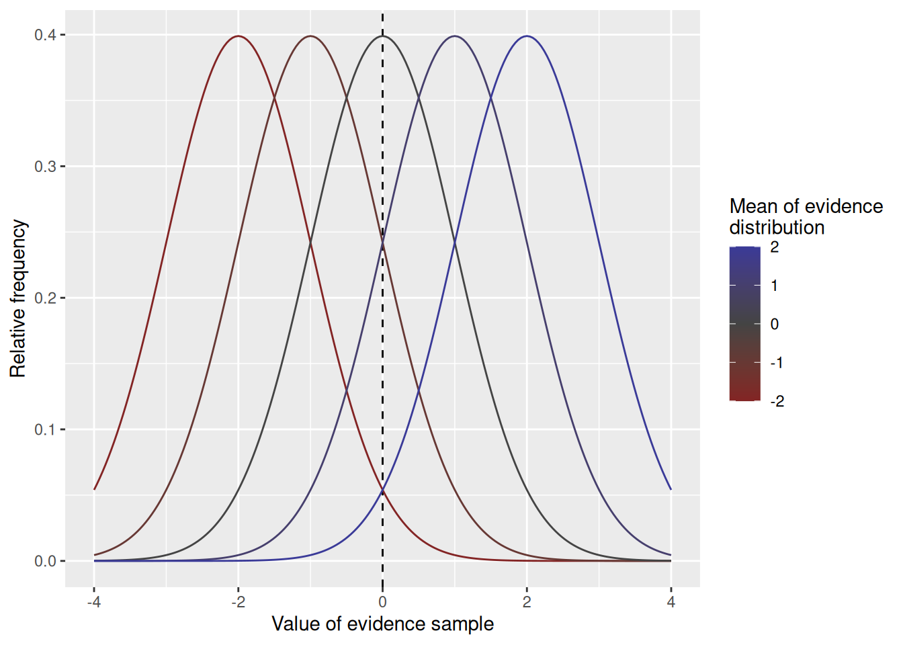
4.1.2 Evidence sampled continuously in time
Here we come to a bit of a subtle issue: In the random walk, evidence arrived in discrete units at regular intervals, but the duration of the interval was not related to the magnitude of the evidence. In a diffusion model, we assume that evidence arrives continuously in time. One way to think about this—indeed, the way that we will simulate this—is that evidence is sampled in many very short intervals of time, each of which has duration \(\Delta t\). When \(\Delta t\) is small enough, those many little intervals will look like one continuous span of time. This principle is illustrated in the graph below.
Code
diffusion_sim <-expand_grid(dt =c(0.1, 0.01, 0.001)) %>%group_by(dt) %>%reframe(t =seq(0, 3, by = dt)) %>%ungroup() %>%mutate(x_sample =rnorm(n =n(), mean =0, sd =1*sqrt(dt))) %>%group_by(dt) %>%mutate(x =cumsum(x_sample))scaled_plot <- diffusion_sim %>%ggplot(aes(x = t, y = x)) +geom_step() +facet_wrap("dt", labeller =label_bquote(Delta * t == .(dt))) +labs(x ="Time", y ="Accumulated evidence", title =expression("Evidence scaled by "* Delta * t))unscaled_plot <- diffusion_sim %>%ggplot(aes(x = t, y = x /sqrt(dt))) +geom_step() +facet_wrap("dt", labeller =label_bquote(Delta * t == .(dt))) +labs(x ="Time", y ="Accumulated evidence", title ="Evidence not scaled")scaled_plot / unscaled_plot
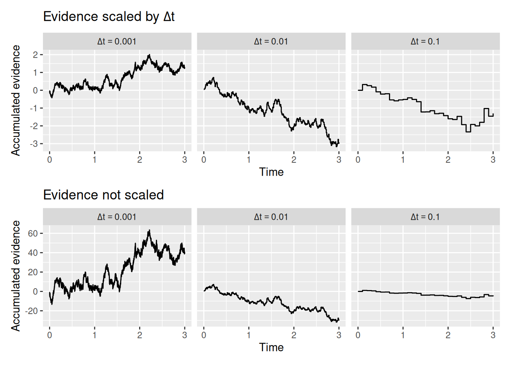
The top set of graphs above show how, when \(\Delta t\) is sufficiently small, the trajectory of accumulated evidence looks essentially continuous—you can no longer see the “jumps” from one interval to the next.
The bottom set of graphs illustrate the subtlety I mentioned earlier. If we divide time into many small intervals but leave the mean and standard deviation of the evidence distribution the same, then we are essentially getting many more samples of evidence. As a result, accumulated evidence has a much larger scale than it would have if we had picked a smaller \(\Delta t\). From a theoretical standpoint, this doesn’t make sense—the rate at which evidence accumulates for a decision should not be affected by the modeler’s arbitrary choice of \(\Delta t\).
So what we do is scale the evidence samples by \(\Delta t\). That’s what was done in the top set of graphs, but not the bottom set. The idea is that if you have very small time intervals, you shouldn’t be able to get as large of a sample of evidence. Again, this makes theoretical sense, if evidence is something that takes time to accumulate.
Specifically, a diffusion model assumes that each sample of evidence is drawn from a normal distribution with a mean of \(v \times \Delta t\), where \(v\) is the drift rate parameter, and a standard deviation of \(\sqrt{\Delta t}\). Why \(\sqrt{\Delta t}\) instead of just \(\Delta t\)? Because it is the mean and variance that need to be scaled by \(\Delta t\).
4.1.3 A new simulation function
Let’s take our rw_sim function from the previous chapter and turn it into a diffusion model. To do this, we make two modifications: First, we swap out the p parameter representing the probability of getting a positive sample for a parameter called v which is the drift rate. Second, instead of getting each evidence sample x_sample from a binomial distribution, we will get it from a normal distribution using R’s rnorm function. These changes are illustrated below.
Code
diffusion_sim <-function(v =0, b_upper =1, b_lower =-1, t0 =0.2, dt =0.01, t_max =Inf) { x <-0 t <- t0 x_record <- x t_record <- twhile (x < b_upper & x > b_lower & t < t_max) { x_sample <-rnorm(n =1, mean = v * dt, sd =sqrt(dt)) x <- x + x_sample t <- t + dt x_record <-c(x_record, x) t_record <-c(t_record, t) }return(data.frame(t = t_record, x = x_record))}
In the code above, I also took the liberty of adjusting the default values of b_upper, b_lower, and dt so that the simulated choices and RT’s would look a bit more like those observed in cognitive tasks, but of course you may feel free to adjust those yourself as you like.
4.1.4 Putting it all together—again
At the end of the last chapter, I included a chunk of code that simulated a random walk and produced some visualizations to help us understand both its internal states and its overt behavior (choices and RT). By swapping out rw_sim with the appropriately adjusted diffusion_sim line, we can apply the same chunk of code to the diffusion model! In the chunk below, I picked some arbitrary but reasonable values for the parameters.
Code
# Specify the number of simulations to runn_sims <-1000# This is initially empty, but will eventually save all our random walk simulationssim_results <-c()# The for loop increments a counter (called "i" here) over a specified range (from 1 up to n_sims)for (i in1:n_sims) {# Simulate a single realization of the random walk with the given parameters current_result <-diffusion_sim(v =0.5, b_upper =1, b_lower =-1)# "Bind" the current simulation to the ongoing record of simulation results sim_results <-rbind( sim_results,# Add a new column that identifies which simulation this was current_result %>%mutate(sim_index = i) )}# Visualize the internal states of the modelsim_results %>%ggplot(aes(x = t, y = x)) +stat_density2d_filled() +labs(x ="Time", y ="Accumulated evidence", fill ="Relative frequency", title ="Internal evidence states over time")
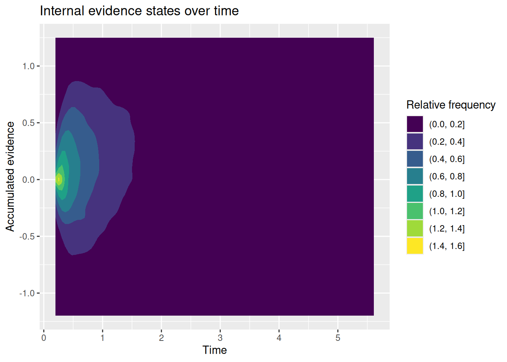
Code
# Extract simulated choices and RT'schoice_rt <- sim_results %>%group_by(sim_index) %>%summarize(choice =factor(last(x) >0, levels =c(TRUE, FALSE), labels =c("upper", "lower")),rt =last(t) )# Plot conditional RT distributionschoice_rt %>%ggplot(aes(x = rt, color = choice)) +geom_density() +labs(x ="Response time", y ="Frequency", color ="Choice", title ="Conditional RT distributions")
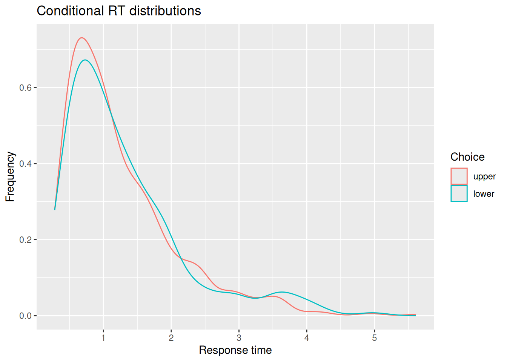
Code
# Quantile-probability plotsim_choice_p <- choice_rt %>%group_by(choice) %>%count() %>%ungroup() %>%mutate(p_resp = n /sum(n))sim_rt_q <- choice_rt %>%group_by(choice) %>%reframe(rt_q =quantile(rt, probs =c(0.1, 0.3, 0.5, 0.7, 0.9)))full_join(sim_choice_p, sim_rt_q) %>%ggplot(aes(x = p_resp, y = rt_q, color = choice)) +geom_point() +expand_limits(x =c(0, 1)) +labs(x ="Response proportion", y ="RT Quantile", title ="Quantile-Probability Plot")
Joining with `by = join_by(choice)`
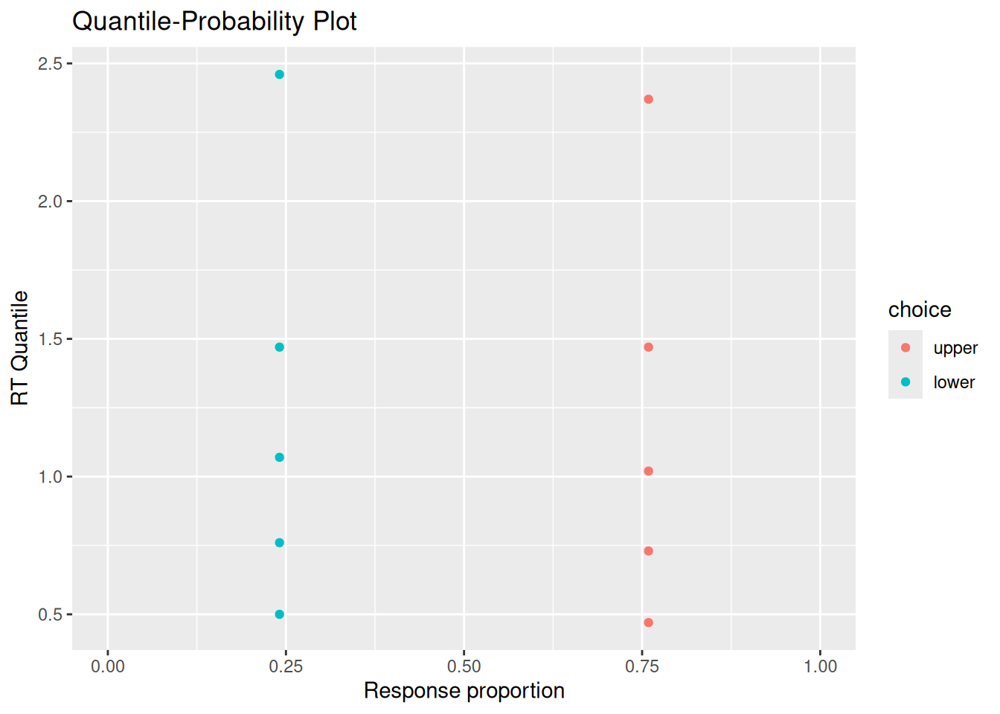
You may or may not be surprised to see that the RT distributions produced by the diffusion model closely resemble those produced by the random walk! The diffusion model also demonstrates an interesting feature of a random walk, namely, that the conditional RT distribution depends on the boundaries but not on the drift rate. In the example above, I set \(v = 0.5\), such that evidence would tend to favor the positive option. Even though the model ends up choosing that option more often, it does not do so any faster or slower than it chooses the negative option. This is something we will return to at the end of this chapter.
4.2 Response caution and response bias
Before confronting the issue of invariant RT distributions, it behooves us to consider a different way of specifying the response boundaries in our model. So far, we have specified those boundaries directly. We can speak of response caution in terms of how far those boundaries are from the starting point and response bias in terms of whether the boundaries are equidistant from the starting point.
Specifically, we could define a term \(A\) that is the total distance between the starting point (zero) and the two boundaries. If \(B_{\text{Upper}}\) and \(B_{\text{Lower}}\) are the upper and lower boundaries, respectively, then \[
A = B_{\text{Upper}} - B_{\text{Lower}}
\] In other words, \(A\) is how far apart the two boundaries are, called boundary separation. The term \(A\) can be seen to operationalize the construct of response caution in that a decision maker who wants to wait to accumulate evidence would put their response boundaries far apart.
We can also operationalize the construct of response bias by defining a term \(w\). This term will be a number between 0 and 1 that represents the degree to which response boundaries favor one choice over the other. Specifically, let \[
w = \frac{-B_{\text{Lower}}}{B_{\text{Upper}} - B_{\text{Lower}}}
\] As shown in the graph below, \(w = 0.5\) when the boundaries are equidistant from zero, \(w < 0.5\) when the boundaries are biased in favor of the negative option, and \(w > 0.5\) when the boundaries are biased in favor of the positive option.
Having defined \(A\) and \(w\) as ways of operationalizing response caution and response bias, respectively, why not treat these values as parameters instead of the boundaries themselves? The value in doing so is that we can then specify these constructs directly, rather than having to work backwards from the boundaries. Specifically, if we pick values of \(A\) and \(w\) we can immediately compute what the upper and lower boundaries should be: \[\begin{align}
B_{\text{Upper}} & = w A \\
B_{\text{Lower}} & = -\left(1 - w \right) A \\
\end{align}\]
And we can adjust our diffusion_sim code accordingly to have a and w as parameters instead of b_upper and b_lower, which now get calculated in the function itself:
Code
diffusion_sim <-function(v =0, a =2, w =0.5, t0 =0.2, dt =0.01, t_max =Inf) { b_upper <- (1- w) * a b_lower <--w * a x <-0 t <- t0 x_record <- x t_record <- twhile (x < b_upper & x > b_lower & t < t_max) { x_sample <-rnorm(n =1, mean = v * dt, sd =1*sqrt(dt)) x <- x + x_sample t <- t + dt x_record <-c(x_record, x) t_record <-c(t_record, t) }return(data.frame(t = t_record, x = x_record))}
4.3 Trial-by-trial variability
Recall that both the random walk and the diffusion model have the following property: The response times they produce depend on the distance between the starting point and the response boundary, not on the drift rate \(v\) or the step probability \(p\). To see why this might be problematic from a psychological perspective, imagine that the upper boundary corresponds to making a correct response while the lower boundary corresponds to making an error. Assume that \(v > 0\), such that the evidence tends to favor making a correct response. The fact that response times do not depend on drift rates means that the model predicts that correct and error responses will be made in the same amount of time. To be more precise, the distribution of RT’s conditional on accuracy are the same.
Often, errors are either faster or slower than correct responses. For example, it may be that errors occur more often when the decision maker happens to get poor evidence. In that case, we might expect errors to be slow because they result from the decision maker deliberating longer in the face of this poor evidence. On the other hand, maybe a decision maker tends to be correct when they take their time, but will sometimes “jump the gun” and pick the wrong option, in which case we would expect errors to be faster than correct responses.
The critical factor that Ratcliff (1978) introduced to the diffusion model that has made it into such a useful tool is that the drift rate is not the same on every trial, but varies randomly from trial to trial. On some trials, you happen to get a drift rate in the high positive tail of the distribution of drift rates, in which case you would probably make a fast correct response. On other trials, you happen to get a drift rate that is close to zero or even falls below zero by chance, in which case you would be more likely to make an error and would tend to do so more slowly. Thus, trial-by-trial variability in drift rates accounts for slow errors.
What about fast errors? Ratcliff & Rouder (1998) showed that these can result if your response boundaries are not always fixed, but can also vary randomly from trial to trial. Sometimes, they happen to be very close to the starting point such that it takes very little evidence to commit to a response. Such rapid responses would be more likely to be errors, since they don’t give much time to accumulate evidence. Thus, trial-by-trial variability in boundaries (or, equivalently, in starting point) accounts for fast errors.
There is a final thing that can vary from trial to trial, and that is residual time. After all, if the time needed to accumulate evidence can vary between trials, so can the time needed to accomplish all the other processes involved in any given decision task. Trial-by-trial variability in residual time does not, of course, affect the probability of choosing either option, but it does affect the form of the RT distributions.
4.3.1 Adding variability to our simulation code
To model each of these kinds of trial-by-trial variability, we need to decide how each of the values above (drift rate, boundaries, and residual time) can vary. This will also inform us as to what new parameters we will need to add to our model to specify that variability. In what follows, we will adopt common assumptions in the literature that are also implemented in the model-fitting functions we will use in later chapters. Check out the exercises (or explore on your own) to consider other forms of trial-by-trial variability!
4.3.1.1 Trial-by-trial variability in drift rates
Our model already has a parameter called \(v\) that stands for the “drift rate”. Let us instead treat \(v\) as the mean of a normal distribution of drift rates, which has standard deviation \(s_v\). If \(s_v = 0\), then we have our original diffusion model with the same drift rate on every trial. On the other hand, if \(s_v > 0\), then the drift rate on any given trial will sometimes be greater or less than \(v\), even if the average drift rate across all trials is \(v\).
To implement this in our simulation code, we need to
Add a new parameter sv.
Add a line that randomly samples the drift rate (called trial_v) from a normal distribution with mean v and standard deviation sv.
Replace v when drawing samples of evidence with trial_v.
These changes are reflected in the following adjusted code:
Code
diffusion_sim <-function(v =0, a =2, w =0.5, t0 =0.2, dt =0.01, t_max =Inf, sv =0) { trial_v <-rnorm(n =1, mean = v, sd = sv) b_upper <- (1- w) * a b_lower <--w * a x <-0 t <- t0 x_record <- x t_record <- twhile (x < b_upper & x > b_lower & t < t_max) { x_sample <-rnorm(n =1, mean = trial_v * dt, sd =1*sqrt(dt)) x <- x + x_sample t <- t + dt x_record <-c(x_record, x) t_record <-c(t_record, t) }return(data.frame(t = t_record, x = x_record))}
The chunk of code below has the same settings as that shown above, only now sv = 1. As you can see, responses on the lower boundary have a different RT distribution, which tends to be slower, than responses on the upper boundary. (Note, too, that I am using our revised code that uses a and w to define the response boundaries.)
Code
# Specify the number of simulations to runn_sims <-1000# This is initially empty, but will eventually save all our random walk simulationssim_results <-c()# The for loop increments a counter (called "i" here) over a specified range (from 1 up to n_sims)for (i in1:n_sims) {# Simulate a single realization of the random walk with the given parameters current_result <-diffusion_sim(v =0.5, a =2, w =0.5, sv =0.5)# "Bind" the current simulation to the ongoing record of simulation results sim_results <-rbind( sim_results,# Add a new column that identifies which simulation this was current_result %>%mutate(sim_index = i) )}# Visualize the internal states of the modelsim_results %>%ggplot(aes(x = t, y = x)) +stat_density2d_filled() +labs(x ="Time", y ="Accumulated evidence", fill ="Relative frequency", title ="Internal evidence states over time")
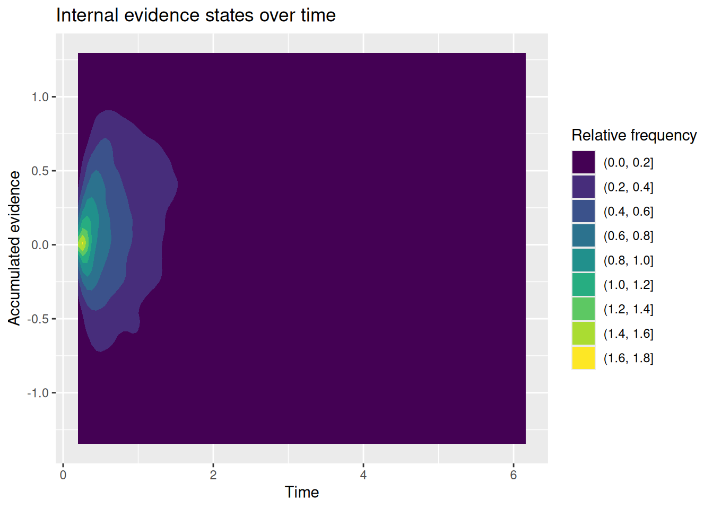
Code
# Extract simulated choices and RT'schoice_rt <- sim_results %>%group_by(sim_index) %>%summarize(choice =factor(last(x) >0, levels =c(TRUE, FALSE), labels =c("upper", "lower")),rt =last(t) )# Plot conditional RT distributionschoice_rt %>%ggplot(aes(x = rt, color = choice)) +geom_density() +labs(x ="Response time", y ="Frequency", color ="Choice", title ="Conditional RT distributions")
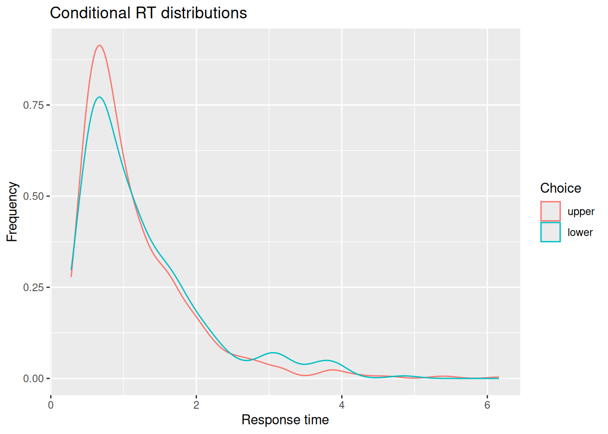
Code
# Quantile-probability plotsim_choice_p <- choice_rt %>%group_by(choice) %>%count() %>%ungroup() %>%mutate(p_resp = n /sum(n))sim_rt_q <- choice_rt %>%group_by(choice) %>%reframe(rt_q =quantile(rt, probs =c(0.1, 0.3, 0.5, 0.7, 0.9)))full_join(sim_choice_p, sim_rt_q) %>%ggplot(aes(x = p_resp, y = rt_q, color = choice)) +geom_point() +expand_limits(x =c(0, 1)) +labs(x ="Response proportion", y ="RT Quantile", title ="Quantile-Probability Plot")
Joining with `by = join_by(choice)`
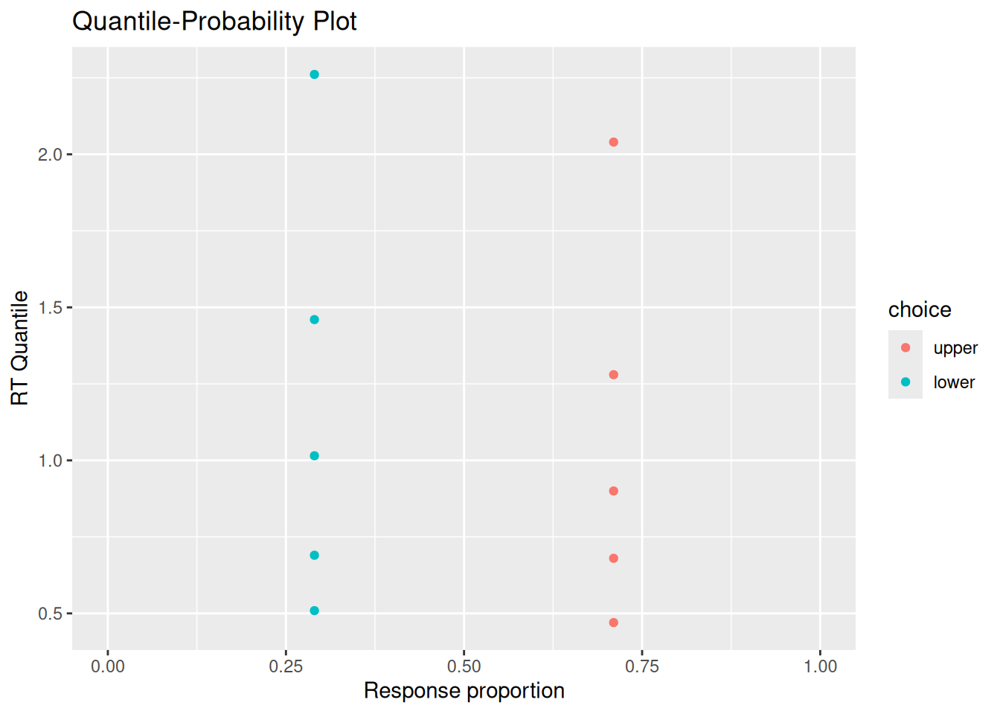
4.3.1.2 Trial-by-trial variability in boundaries/starting point
There are a number of ways that we could introduce variability in the starting point and/or boundaries. To be consistent with the model-fitting we will do later, we will assume that the bias parameter \(w\) is not fixed, but is sampled from a uniform distribution that goes from \(w - \frac{s_w}{2}\) to \(w + \frac{s_w}{2}\). Thus, the average bias is still \(w\) but has a range defined by parameter \(s_w\). As above, we need to add this new parameter and randomly sample a trial_w value at the top of our code. Note that the line that samples trial_w does some checking using the min and max functions to make sure that \(w\) never falls below 0 or greater than 1.
Code
diffusion_sim <-function(v =0, a =2, w =0.5, t0 =0.2, dt =0.01, t_max =Inf, sv =0, sw =0) { trial_v <-rnorm(n =1, mean = v, sd = sv) trial_w <-runif(n =1, min =max(0, w -0.5* sw), max =min(1, w +0.5* sw)) b_upper <- (1- trial_w) * a b_lower <--trial_w * a x <-0 t <- t0 x_record <- x t_record <- twhile (x < b_upper & x > b_lower & t < t_max) { x_sample <-rnorm(n =1, mean = trial_v * dt, sd =1*sqrt(dt)) x <- x + x_sample t <- t + dt x_record <-c(x_record, x) t_record <-c(t_record, t) }return(data.frame(t = t_record, x = x_record))}
The simulations below set \(s_v = 0\) and \(s_w = 0.9\), while \(v = 0.5\). In the simulations below, when the model picks the “incorrect” option associated with the lower boundary, it is predicted to do so faster than when it responds by choosing the “correct” option associated with the upper boundary.
Code
# Specify the number of simulations to runn_sims <-1000# This is initially empty, but will eventually save all our random walk simulationssim_results <-c()# The for loop increments a counter (called "i" here) over a specified range (from 1 up to n_sims)for (i in1:n_sims) {# Simulate a single realization of the random walk with the given parameters current_result <-diffusion_sim(v =0.5, a =2, w =0.5, sv =0, sw =0.9)# "Bind" the current simulation to the ongoing record of simulation results sim_results <-rbind( sim_results,# Add a new column that identifies which simulation this was current_result %>%mutate(sim_index = i) )}# Visualize the internal states of the modelsim_results %>%ggplot(aes(x = t, y = x)) +stat_density2d_filled() +labs(x ="Time", y ="Accumulated evidence", fill ="Relative frequency", title ="Internal evidence states over time")
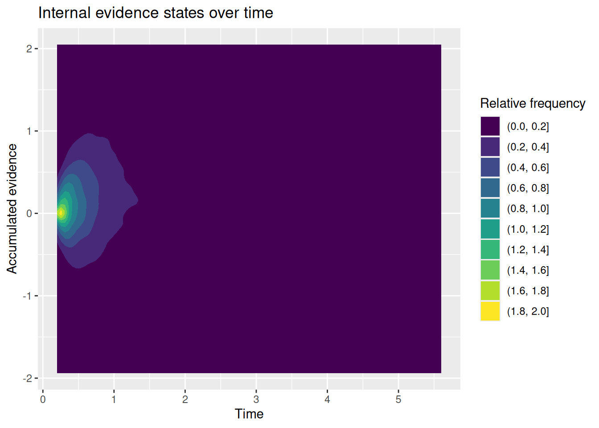
Code
# Extract simulated choices and RT'schoice_rt <- sim_results %>%group_by(sim_index) %>%summarize(choice =factor(last(x) >0, levels =c(TRUE, FALSE), labels =c("upper", "lower")),rt =last(t) )# Plot conditional RT distributionschoice_rt %>%ggplot(aes(x = rt, color = choice)) +geom_density() +labs(x ="Response time", y ="Frequency", color ="Choice", title ="Conditional RT distributions")
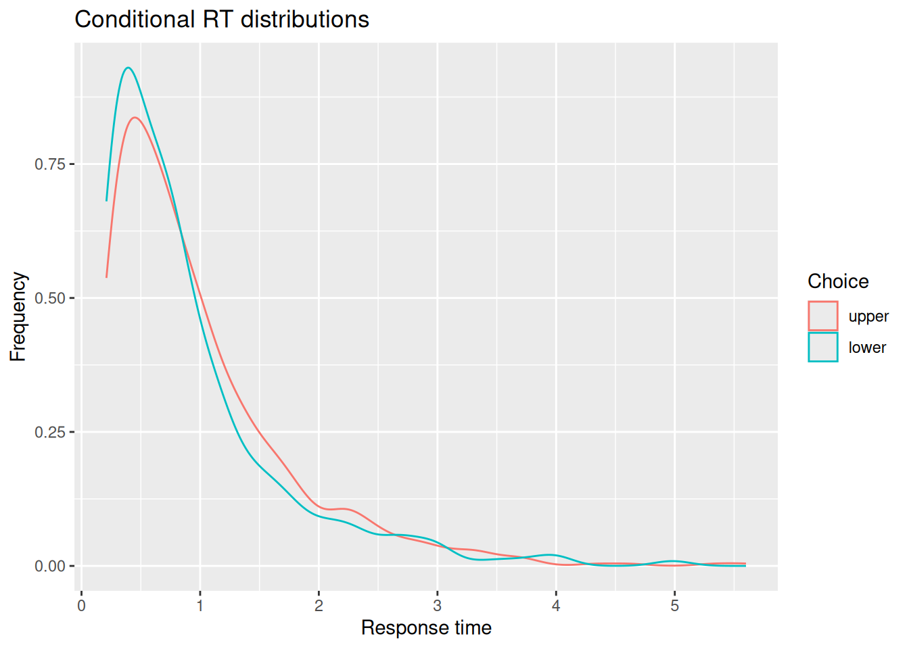
Code
# Quantile-probability plotsim_choice_p <- choice_rt %>%group_by(choice) %>%count() %>%ungroup() %>%mutate(p_resp = n /sum(n))sim_rt_q <- choice_rt %>%group_by(choice) %>%reframe(rt_q =quantile(rt, probs =c(0.1, 0.3, 0.5, 0.7, 0.9)))full_join(sim_choice_p, sim_rt_q) %>%ggplot(aes(x = p_resp, y = rt_q, color = choice)) +geom_point() +expand_limits(x =c(0, 1)) +labs(x ="Response proportion", y ="RT Quantile", title ="Quantile-Probability Plot")
Joining with `by = join_by(choice)`
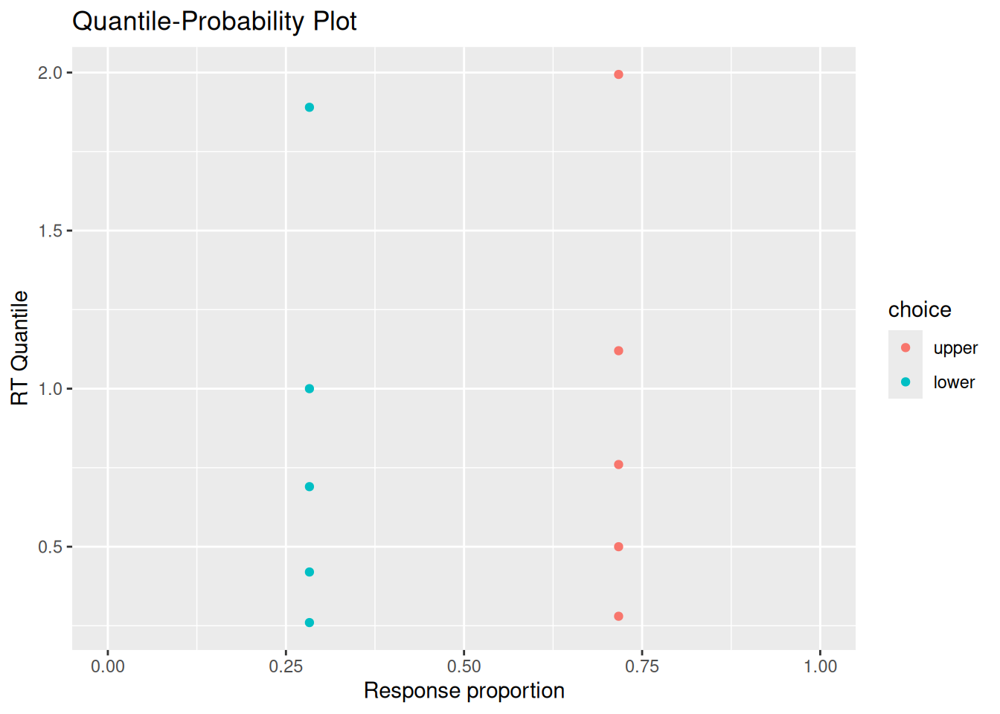
4.3.1.3 Trial-by-trial variability in residual time
Our final amendment to our diffusion simulation code involves adding variability to the residual time. Again, there are many ways we could do this, but we will adopt the same conventional approach used in our model-fitting later: We will assume that the residual time on any given trial is sampled from a uniform distribution that ranges from \(t_0\) to \(t_0 + s_{t_0}\). The code below adds the new st0 parameter and samples a residual time trial_t0 from a uniform distribution at the beginning of the simulation:
Code
diffusion_sim <-function(v =0, a =2, w =0.5, t0 =0.2, dt =0.01, t_max =Inf, sv =0, sw =0, st0 =0) { trial_v <-rnorm(n =1, mean = v, sd = sv) trial_w <-runif(n =1, min =max(0, w -0.5* sw), max =min(1, w +0.5* sw)) trial_t0 <-runif(n =1, min = t0, max = t0 + st0) b_upper <- (1- trial_w) * a b_lower <--trial_w * a x <-0 t <- trial_t0 x_record <- x t_record <- twhile (x < b_upper & x > b_lower & t < t_max) { x_sample <-rnorm(n =1, mean = trial_v * dt, sd =1*sqrt(dt)) x <- x + x_sample t <- t + dt x_record <-c(x_record, x) t_record <-c(t_record, t) }return(data.frame(t = t_record, x = x_record))}
The simulations below again assume that \(v = 0.5\) and set \(s_v = s_w = 0\) while \(s_t = 0.5\). Note that the resulting RT distributions end up having a longer early tail, reflecting greater variability in the fastest RT’s due to variability in residual time.
Code
# Specify the number of simulations to runn_sims <-1000# This is initially empty, but will eventually save all our random walk simulationssim_results <-c()# The for loop increments a counter (called "i" here) over a specified range (from 1 up to n_sims)for (i in1:n_sims) {# Simulate a single realization of the random walk with the given parameters current_result <-diffusion_sim(v =0.5, a =2, w =0.5, sv =0, sw =0, st0 =0.6)# "Bind" the current simulation to the ongoing record of simulation results sim_results <-rbind( sim_results,# Add a new column that identifies which simulation this was current_result %>%mutate(sim_index = i) )}# Visualize the internal states of the modelsim_results %>%ggplot(aes(x = t, y = x)) +stat_density2d_filled() +labs(x ="Time", y ="Accumulated evidence", fill ="Relative frequency", title ="Internal evidence states over time")
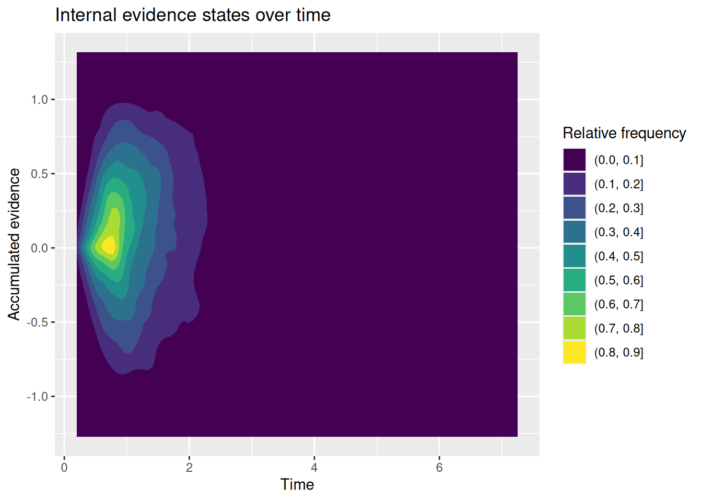
Code
# Extract simulated choices and RT'schoice_rt <- sim_results %>%group_by(sim_index) %>%summarize(choice =factor(last(x) >0, levels =c(TRUE, FALSE), labels =c("upper", "lower")),rt =last(t) )# Plot conditional RT distributionschoice_rt %>%ggplot(aes(x = rt, color = choice)) +geom_density() +labs(x ="Response time", y ="Frequency", color ="Choice", title ="Conditional RT distributions")
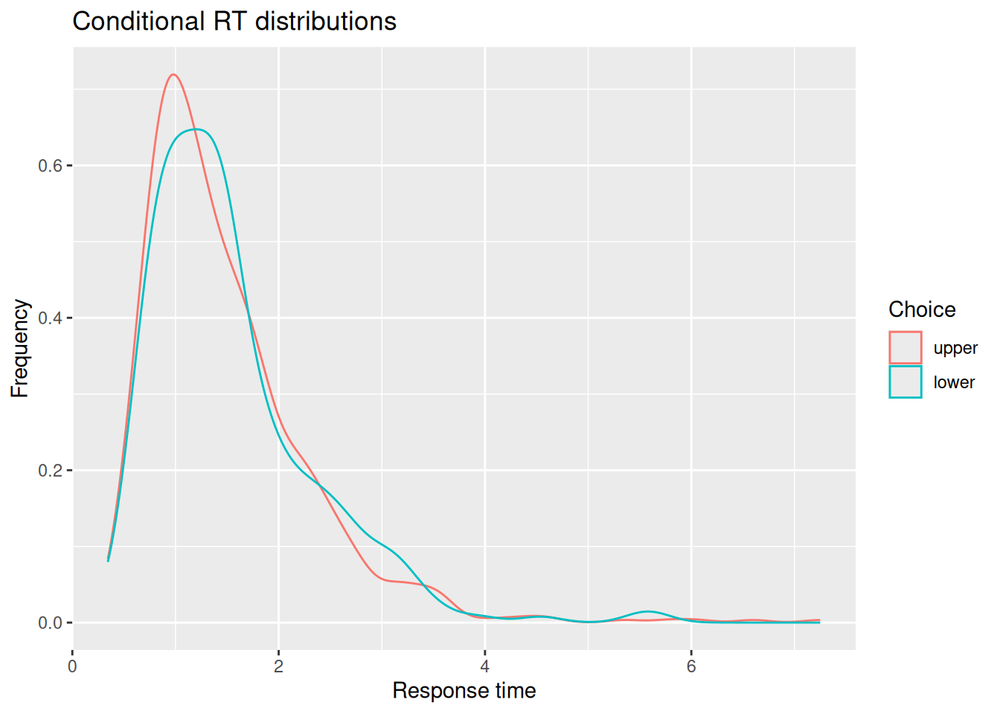
Code
# Quantile-probability plotsim_choice_p <- choice_rt %>%group_by(choice) %>%count() %>%ungroup() %>%mutate(p_resp = n /sum(n))sim_rt_q <- choice_rt %>%group_by(choice) %>%reframe(rt_q =quantile(rt, probs =c(0.1, 0.3, 0.5, 0.7, 0.9)))full_join(sim_choice_p, sim_rt_q) %>%ggplot(aes(x = p_resp, y = rt_q, color = choice)) +geom_point() +expand_limits(x =c(0, 1)) +labs(x ="Response proportion", y ="RT Quantile", title ="Quantile-Probability Plot")
Joining with `by = join_by(choice)`
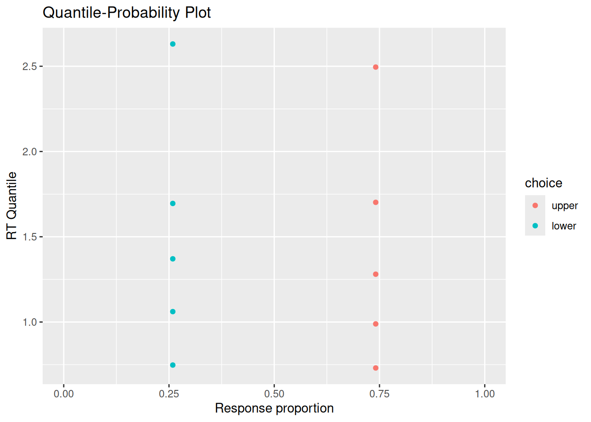
4.3.2 Putting it all together (finally!)
Finally, for completeness, let’s collect our code to run a set of simulations that allows for all three kinds of variability. This code is not executed here, but is included so it can serve as the basis for your own simulations and explorations.
Code
# Specify the number of simulations to runn_sims <-1000# This is initially empty, but will eventually save all our random walk simulationssim_results <-c()# The for loop increments a counter (called "i" here) over a specified range (from 1 up to n_sims)for (i in1:n_sims) {# Simulate a single realization of the random walk with the given parameters current_result <-diffusion_sim(v =0.5, a =2, w =0.5, sv =0.5, sw =0.2, st0 =0.4)# "Bind" the current simulation to the ongoing record of simulation results sim_results <-rbind( sim_results,# Add a new column that identifies which simulation this was current_result %>%mutate(sim_index = i) )}# Visualize the internal states of the modelsim_results %>%ggplot(aes(x = t, y = x)) +stat_density2d_filled() +labs(x ="Time", y ="Accumulated evidence", fill ="Relative frequency", title ="Internal evidence states over time")# Extract simulated choices and RT'schoice_rt <- sim_results %>%group_by(sim_index) %>%summarize(choice =factor(last(x) >0, levels =c(TRUE, FALSE), labels =c("upper", "lower")),rt =last(t) )# Plot conditional RT distributionschoice_rt %>%ggplot(aes(x = rt, color = choice)) +geom_density() +labs(x ="Response time", y ="Frequency", color ="Choice", title ="Conditional RT distributions")# Quantile-probability plotsim_choice_p <- choice_rt %>%group_by(choice) %>%count() %>%ungroup() %>%mutate(p_resp = n /sum(n))sim_rt_q <- choice_rt %>%group_by(choice) %>%reframe(rt_q =quantile(rt, probs =c(0.1, 0.3, 0.5, 0.7, 0.9)))full_join(sim_choice_p, sim_rt_q) %>%ggplot(aes(x = p_resp, y = rt_q, color = choice)) +geom_point() +expand_limits(x =c(0, 1)) +labs(x ="Response proportion", y ="RT Quantile", title ="Quantile-Probability Plot")
4.4 Shiny App
To have a good deal of fun exploring how the different parameters of a diffusion model influence its predicted choice and RT distributions, download this Shiny app and run it from RStudio. You will also need to download this R script into the same directory as the Shiny app. The Shiny app has some additional functionality that we will see more of in the next chapter.
4.5 Exercises
Under what circumstances do you think it is more likely for errors to be faster than correct responses? What about circumstances in which errors are more likely to be slower than correct responses? What do you think about the psychological implications of how the diffusion model produces either fast or slow errors?
Write a new diffusion simulation that uses a different distribution of drift rates from trial to trial—you might try distributions that are skewed (like an ExGaussian) or have heavy tails (like the T distribution with few degrees of freedom).
Describe the distribution you picked and whether it corresponds to a theory or hypothesis about how evidence may vary from trial-to-trial in a particular cognitive task.
Describe any differences you find between the model you wrote and the model in the chapter that assumes a normal distribution of drift rates across trials.
Ratcliff, R. (1978). A theory of memory retrieval. Psychological Review, 85(2), 59–108.
Ratcliff, R., & Rouder, J. N. (1998). Modeling response times for two-choice decisions. Psychological Science, 9(5), 347–356.